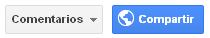
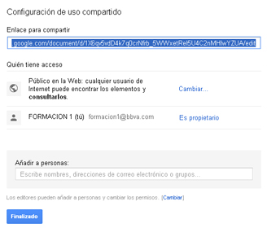
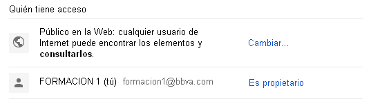
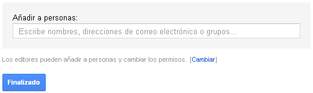
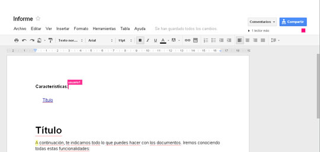
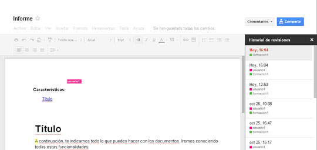

Es posible trabajar de forma colaborativa, compartiendo y publicando documentos. Para elegir quien tendrá acceso al documento y si podrá modificarlo trabajando colaborativamente tendremos que hacer antes lo siguiente:
Para realizar un trabajo colaborativo, pincharemos sobre la opción Compartir.

Aparecerá un cuadro de diálogo en el que se nos proporcionará una URL que podemos enviar a cualquier usuario para compartir nuestro documento.

Podemos dar a nuestro documento una mayor o menor privacidad y decidir quien puede visualizarlo. En la sección Quién tiene acceso, pincharemos sobre Cambiar. Se abrirá entonces un nuevo cuadro de diálogo y aquí decidiremos si deseamos hacerlo público o no. También podremos cambiar los permisos a aquellos que accedan al archivo. Pincharemos en Puede ver, para decidir si otros pueden editar, comentar o solo visualizar.

Más abajo, en la opción Añadir a personas podremos agregar una dirección de correo o grupos para compartir.

Cuando varios usuarios que comparten un mismo archivo trabajan simultáneamente en él, aparece el número de lectores en la parte superior de éste y los cambios que se están efectuando en él en tiempo real.

Como hemos visto, podemos realizar un documento de texto, ya sea en solitario o colaborativamente. Quedará siempre registro en el historial de revisión las ediciones realizadas así como el origen de las mismas.
